Madonna
AnaVitoria
Beyonce
Alanis Morissette
Pink
Só Nordeste
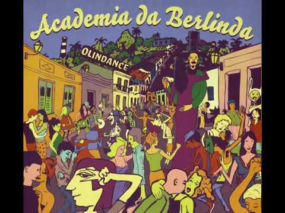
Academia da Berlinda
Os sete amigos de infância que criaram o grupo Academia da Berlinda compartilham, além das boas lembranças da vida na Cidade Alta de Olinda-PE, uma sonoridade original e repleta de influências e referências mágicas.
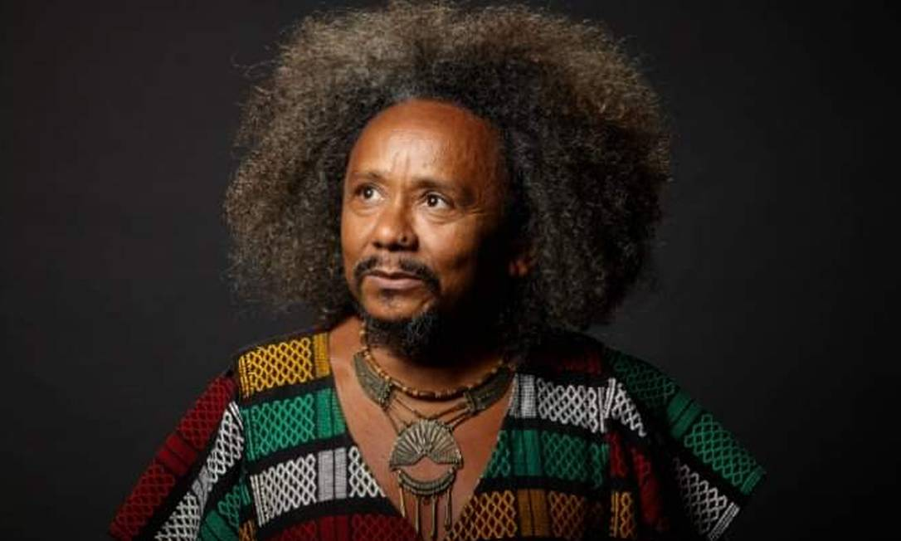
Chico Cesár
Chico César nasceu no município de Catolé do Rocha, interior da Paraíba, e aos dezesseis anos mudou-se para João Pessoa. Formou-se em jornalismo pela Universidade Federal da Paraíba. Na época da universidade, entrou para o grupo Jaguaribe Carne, onde fazia poesia de vanguarda
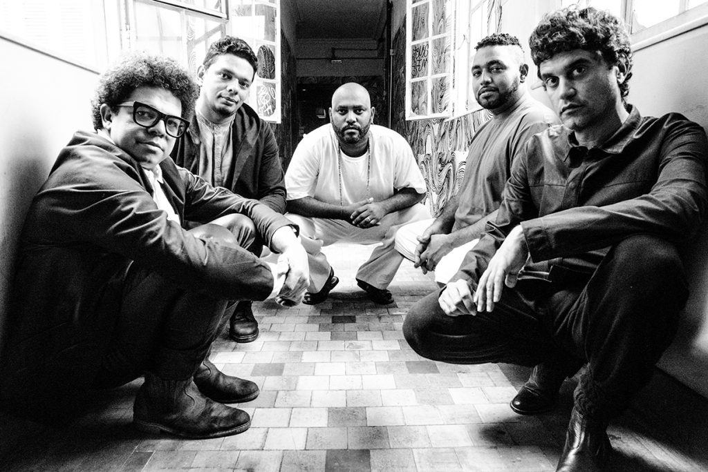
Cordel do Fogo Encantado
Cordel do Fogo Encantado é um grupo musical brasileiro fundado na cidade de Arcoverde, Pernambuco. Nascia o espetáculo "Cordel do Fogo Encantado", basicamente de poesia, onde a música ocuparia um espaço de ligação entre essa poesia.
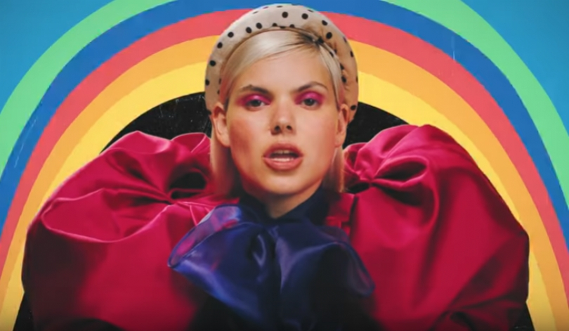
Duda Beat
É apelidada de rainha da sofrência pop, é uma cantora e compositora brasileira. Ela ganhou o Troféu APCA de revelação de 2018 e teve o seu álbum de estreia incluído na lista dos dez melhores discos nacionais do ano da revista Rolling Stone.
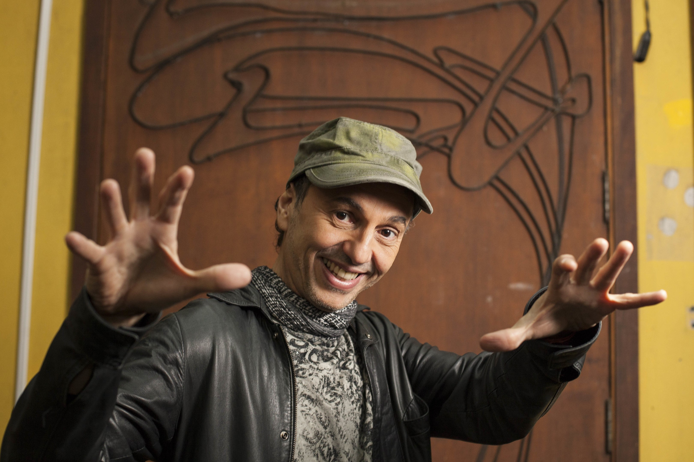
Zeca Baleiro
É um cantor, compositor, cronista e músico brasileiro de MPB. Transferiu-se para São Paulo onde lançou sua carreira. Em 2011, lançou um livro de crônicas intitulado Bala na agulha.
Divas
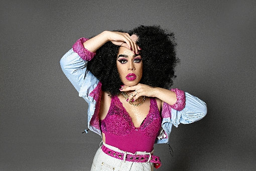
Gloria Groove
Daniel Garcia Felicione Napoleão, também conhecido pelo seu nome artístico Gloria Groove, é um cantor, rapper, compositor, dublador, ator e drag queen brasileiro.
Iza
é uma cantora, compositora, apresentadora e publicitária brasileira. Em 2019 Iza estreou como jurada no The Voice Brasil e foi anunciada como rainha de bateria da Imperatriz Leopoldinense.
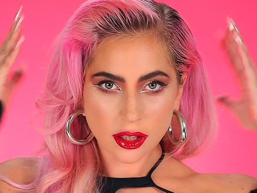
Lady Gaga
Gaga é reconhecida pelas suas contribuições extravagantes, diferentes e exageradas à indústria musical através da sua moda, actuações e vídeos musicais.
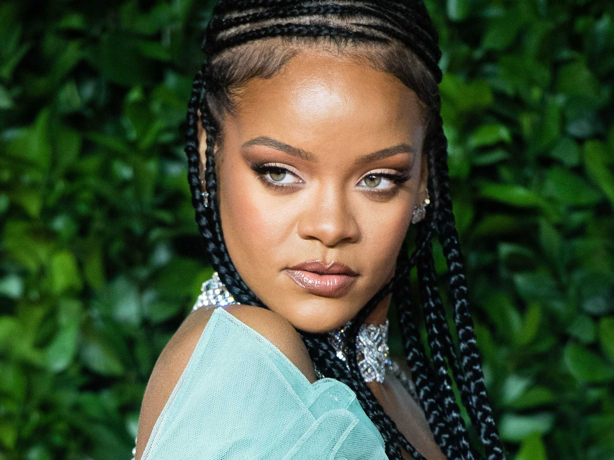
Rihanna
Além de sua carreira musical, Rihanna também é conhecida por seu envolvimento em causas humanitárias, empreendimentos empresariais e na indústria da moda.

Sia
É uma cantora, compositora, produtora, diretora, roteirista e dubladora australiana. Ela começou sua carreira como cantora na banda de acid jazz Crisp, em meados da década de 1990.
Rock

Charlie Brown Jr.
Charlie Brown Jr. foi uma banda brasileira de rock formada em Santos em 1992. Em julho de 2015, um levantamento do Deezer revelou que o Charlie Brown Jr. é a segunda banda brasileira de rock mais ouvida no exterior, atrás apenas do Sepultura.
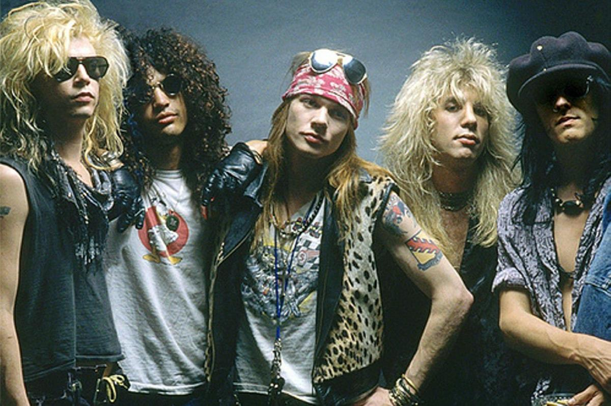
Guns N' Roses
é uma banda norte-americana de hard rock formada em Los Angeles, Califórnia, em 1985. A banda já lançou seis álbuns de estúdio, três EPs e um álbum ao vivo.
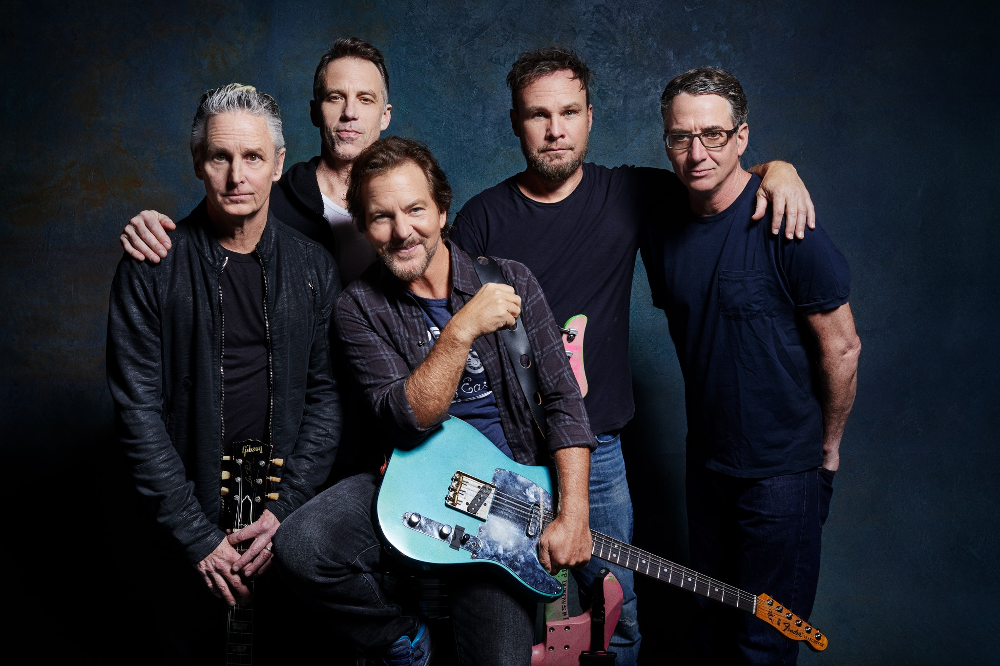
Pearl Jam
Pearl Jam é uma banda norte-americana de rock alternativo. O Pearl Jam foi incluído no Rock and Roll Hall of Fame em 2017.
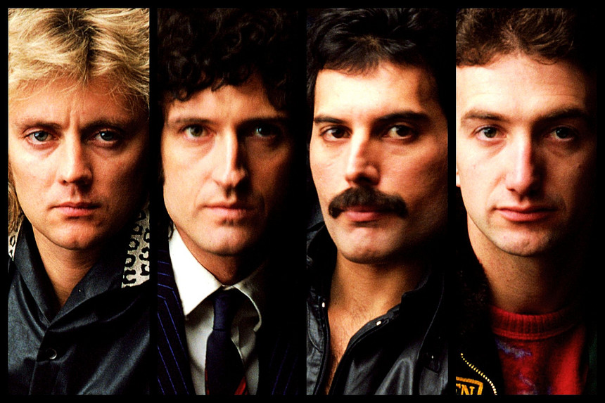
Queen
É frequentemente citado como um dos expoentes do seu estilo, também sendo um dos recordistas de vendas de discos a nível mundial. A música da banda também é conhecida por ser altamente eclética, variando entre várias vertentes do rock.
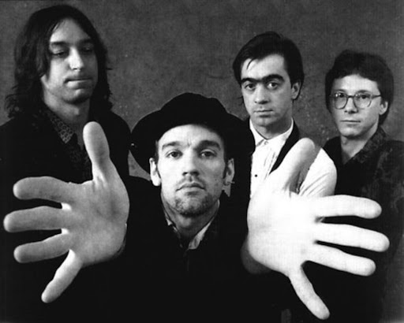
R.E.M
Uma das primeiras bandas populares do rock alternativo, o R.E.M. ganhou atenção, em seus primórdios, devido aos arpejos de guitarra de Peter Buck e aos vocais de Stipe.
Baladinhas
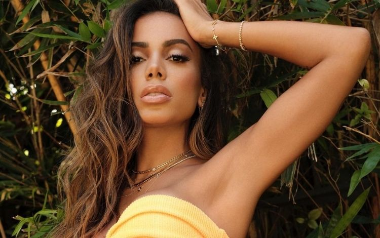
Anitta
É uma cantora, compositora, atriz, dançarina, empresária e apresentadora brasileira. Ela começou a cantar aos sete anos de idade em um coral de uma igreja católica no bairro Honório Gurgel, no Rio de Janeiro.
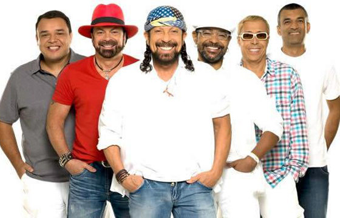
Chiclete com Banana
É um dos principais nomes do axé e micaretas. O grupo conta com grande legião de fãs, conhecidos como chicleteiros.
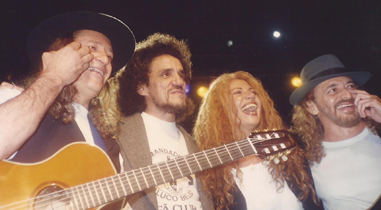
O Grande Encontro
é um álbum conjunto dos cantores Elba Ramalho, Alceu Valença, Geraldo Azevedo e Zé Ramalho.
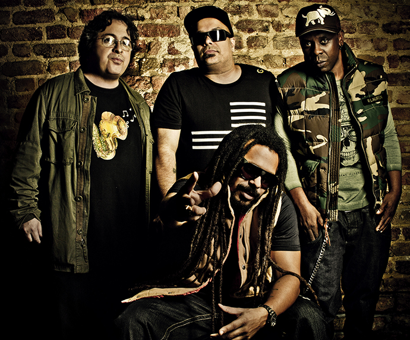
O Rappa
Notável por suas letras de forte cunho social. Formada pelos músicos que acompanharam o cantor de reggae Papa Winnie em uma turnê pelo Brasil mais o cantor Marcelo Falcão.
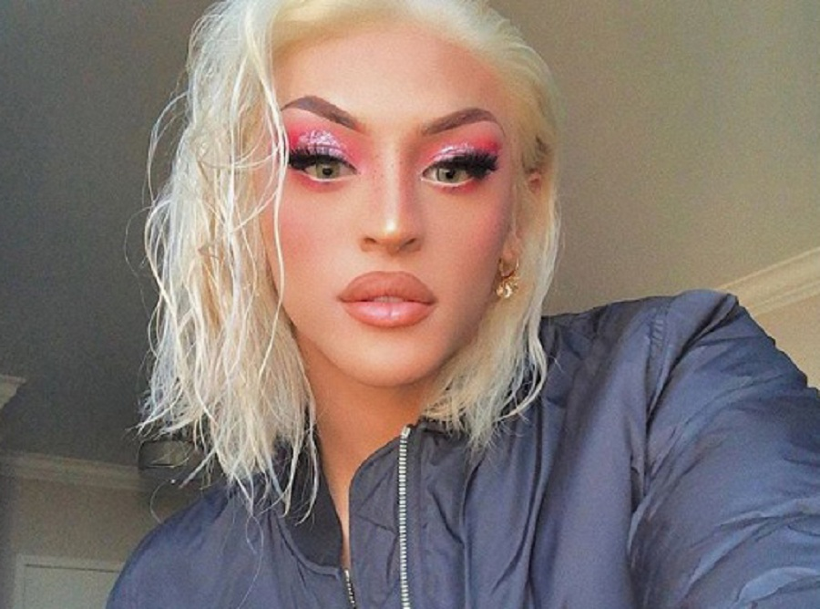
Pablo Vittar
Phabullo Rodrigues da Silva (São Luís, 1 de novembro de 1993), conhecido por seu nome artístico Pabllo Vittar, é um cantor e drag queen brasileiro.